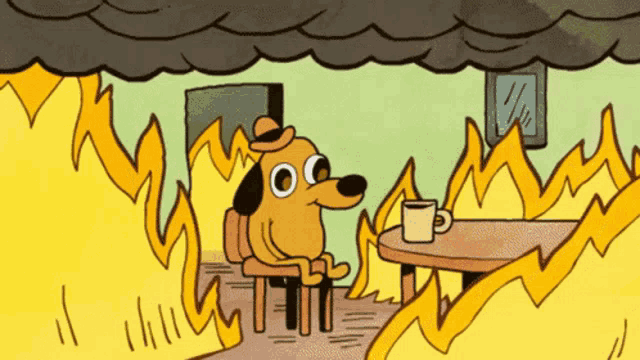

AdminSCH
Több minden — 13 év története
A teljes anyag itt is elérhető: adminsch.lasz.io
KSZK 2018 óta
Rólam
Rafael László — Lackó / rlacko
VMWare Rendszergazda · Devteam körvezető · Főmentor · K8S Rendszergazda
2022–2026: Dánia (Devoteam → Trackman) · most: Bitrise


A kihívás
Legalább 500 új diák.
Minden évben.

2013
amit örököltem

Admintools, 2000-es évek
Zolij
2013. február 11.

1235
commit
évekig
gyakorlatilag egyedül
2015–2019
az újraírási kísérletek
MB
price on networkRegistration.php form final5
Madarász Bence · 2019. április 4.
MB
price on networkRegistration.php form final4
Madarász Bence · 2019. április 4.
MB
price on networkRegistration.php form final3
Madarász Bence · 2019. április 4.
MB
Merge remote-tracking branch 'origin/bmejegy' into bmejegy
Madarász Bence · 2019. április 4.
MB
price on networkRegistration.php form final2
Madarász Bence · 2019. április 4.
2019
Márki-Zay Feri, Kiss Tomi, Pünkösd Marcell — mikroszolgáltatások

2020–2021
a projekt lassú halála
727
2020
92
2021
2021
Akkor vége?

AdminSCH::Code
Hackathon
Marcselló & Adrián

AdminSCH::Code Vol. 1 — 2022. március 19.
2022. június 25.
AdminSCH::Code


Kacsák!

RADIUS, DHCP, VLAN-service és a switchek
2022. augusztus 1.
01:26 — átálltunk


2022 vége – 2023
finomítás, stabilizálás, sztenderdizálás
2024–2026
a stafétabot
schaccreg
végre önkiszolgáló regisztráció
sch-natgw-sync
a NAT-probléma is megoldva
A történet nem állt meg.
6238
commit
71
közreműködő
73
repó
13
év
Commitok évente
Kik csinálták
73 repó, hat kategória
34
archivált repó — lezárt fejezetek, nem hibák
992 kiadás, 2019–2026
Köszönöm.
Kérdések?
gyebenAbonyi Bencekozkbalzs23Marcell PünkösdzyxtronSinkó DánielAdrián RobotkaTakács Gergő TiborRevolexmankovalkoschMuzsai LászlóArmin ZavadamarcselloblintHorváth ZoltánTőrös AndrásSanyaBence OroszTorma KristófÓnodi-Kiss LiliAgócs DánielCseh ViktorarcterAnna BajnoktothadamSpyrogaborpeterbenjamin2000radlaci97fodorpatrik2000VikusPomucz TamásLászló MócsyElizd.bajnokWendl LiliDániel BakaiGelencser ÁkosGyörgy KurucztothgaborVárkonyi KornélMadarász BenceFricska KamillaCsaba ZamolyiBendegúz GyönkiHunor TothhunbalazssadneutrinoEckl MátéBakos ÁdámzsotroavBodor MátéAdam KovacsKalmár BalázsSzenes Márton Miklóstamas722gombossbBenceGyurusMárki-Zay FerencbenjoeCsókás BenceGyimesi NorbertBenjamin PeterJanega Zoltán (zolij)Tamas KissEck BalázsflorafelaloraIllésSzenczy Balázs
gyebenAbonyi Bencekozkbalzs23Marcell PünkösdzyxtronSinkó DánielAdrián RobotkaTakács Gergő TiborRevolexmankovalkoschMuzsai LászlóArmin ZavadamarcselloblintHorváth ZoltánTőrös AndrásSanyaBence OroszTorma KristófÓnodi-Kiss LiliAgócs DánielCseh ViktorarcterAnna BajnoktothadamSpyrogaborpeterbenjamin2000radlaci97fodorpatrik2000VikusPomucz TamásLászló MócsyElizd.bajnokWendl LiliDániel BakaiGelencser ÁkosGyörgy KurucztothgaborVárkonyi KornélMadarász BenceFricska KamillaCsaba ZamolyiBendegúz GyönkiHunor TothhunbalazssadneutrinoEckl MátéBakos ÁdámzsotroavBodor MátéAdam KovacsKalmár BalázsSzenes Márton Miklóstamas722gombossbBenceGyurusMárki-Zay FerencbenjoeCsókás BenceGyimesi NorbertBenjamin PeterJanega Zoltán (zolij)Tamas KissEck BalázsflorafelaloraIllésSzenczy Balázs